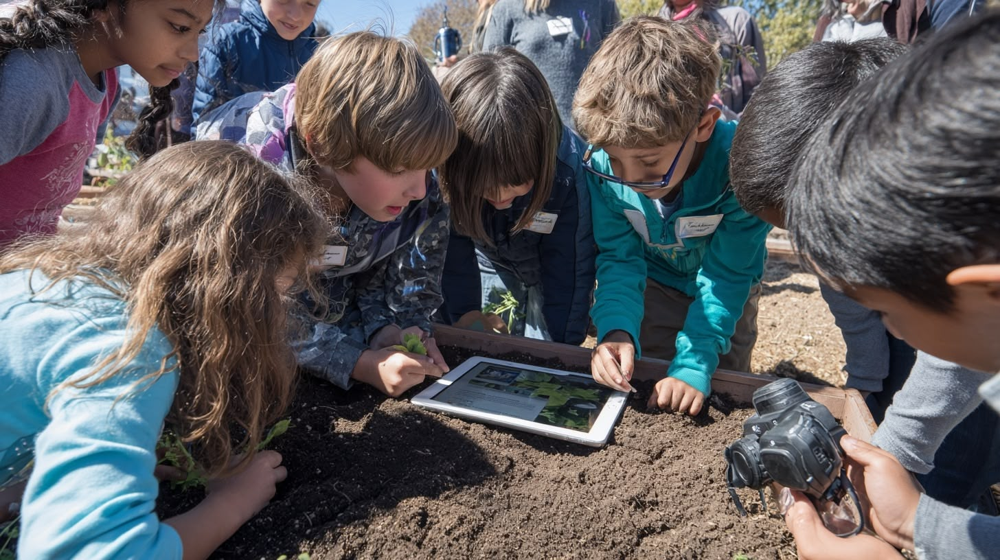
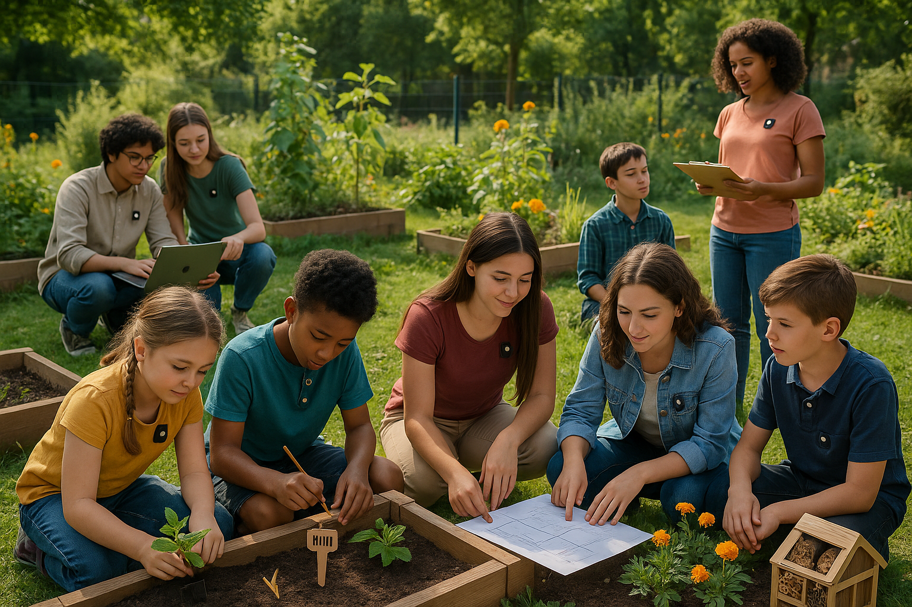
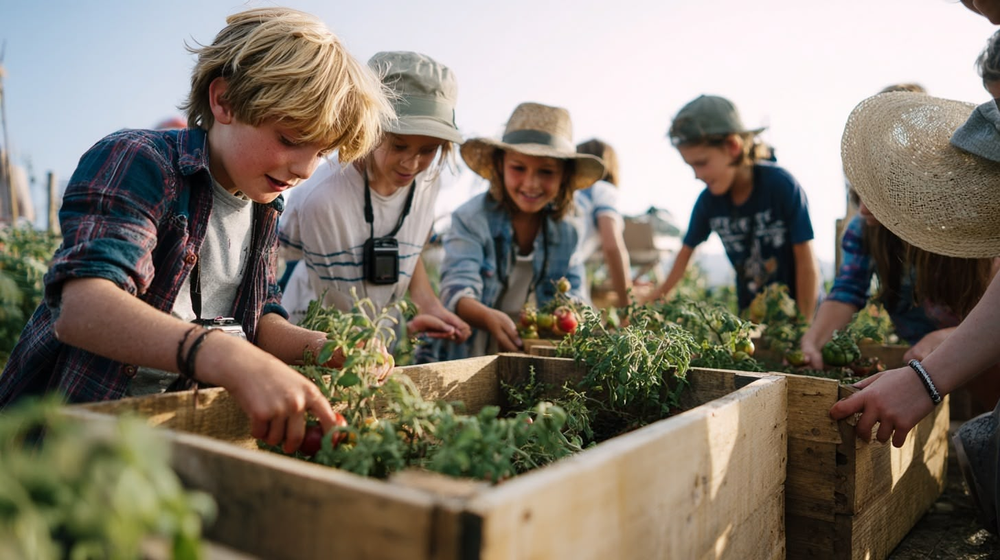

Mykrozziha ─ The new age of education
What Do We Learn When AI Knows Everything?
Artificial intelligence has turned knowledge reproduction into a cheap commodity. When a machine can instantly answer any factual question, the traditional role of a teacher simply transferring information becomes completely obsolete.
By outsourcing our daily thinking to AI, we are actively losing the critical skills we need to survive in the future.
Mykrozziha is the counter-movement. Instead of fighting the technology, we designed an adaptive learning ecosystem that shifts the focus entirely: away from rigid memorization, towards fostering independent judgment, reasoning, and personal growth.
How the System Must Change
Teachers become mentors. AI takes over the boring, repetitive tasks like basic testing. This gives teachers the time to actually focus on the social and emotional growth of their students.
No more classic grades. A student's progress is no longer just a stressful number on a paper. We measure real skills and practical results.
Flexible teams instead of fixed classes. We remove traditional classrooms. Students work together in dynamic groups based on their skills and the project, not just their age.
The end of stressful exams. Testing is no longer a single, high-pressure event. The system tracks a student's progress naturally in the background while they learn.
Your Personal Skill Tree
Your Personal Skill Tree
Instead of a rigid report card, students build a visual profile of their skills. It grows dynamically as they master basics, learn new tools, and dive into their personal interests.
This becomes a lifelong portfolio. Rather than showing a single grade, learners can actually prove what they know, how curious they are, and how much they've grown over time.
Learning Through Real Projects
Building a real project—like a community garden—forces students to combine biology, logistics, and teamwork naturally. They learn by solving actual physical problems together, not by reading isolated chapters in a book.
Supervisor Dashboard
Teachers don't need to micromanage schedules anymore. A clean dashboard shows exactly where a student is stuck and where they are thriving, without interrupting the student's workflow.
This allows mentors to step in only when it really matters—to clear roadblocks, give specific feedback, or encourage a student at the exact right moment.
Learning from Historical Minds
AI-powered tutors act like Einstein or Curie. Instead of just delivering facts, they chat with learners in plain English, explaining their doubts and how they made their breakthroughs, bringing history and science back to life.
What We Learned
We realized that the traditional school system isn't broken—it's just designed for compliance, not curiosity. As soon as you remove forced grades, rigid subjects, and strict pacing, students naturally want to learn again.
Technology shouldn't replace teachers. It should run the system, so teachers can guide the humans.
By letting AI handle the endless logistics and tracking, we give educators their real job back. They finally have the time to focus on what actually matters: providing emotional safety, mentoring personal growth, and building real human connections.